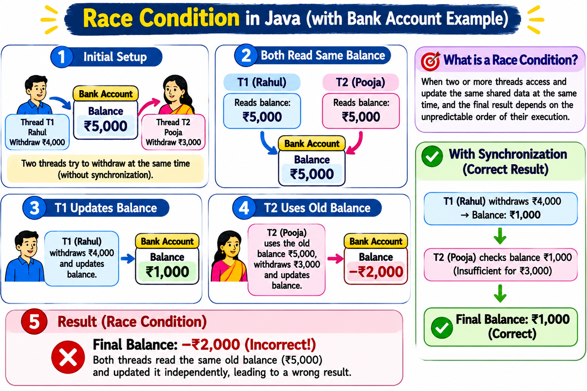
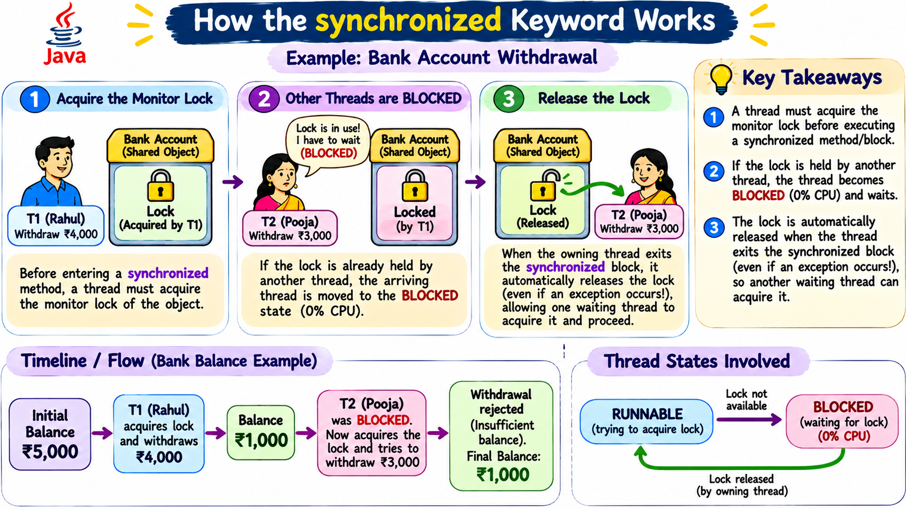

One shared bank account. Two withdrawal requests. Learn how a race condition happens — and how Java's synchronized keyword protects the balance.
Throughout this lesson, use the same joint bank account and the same two customers:
₹5,000
Starting balance in one shared account object.
Rahul (Thread T1): withdraw ₹4,000
Pooja (Thread T2): withdraw ₹3,000
balance field. The balance is shared because both threads use the same BankAccount object.A race condition occurs when the result depends on the unpredictable timing or order in which threads access shared data.
| Order | Rahul (T1) | Pooja (T2) | Stored balance |
|---|---|---|---|
| 1 | Reads ₹5,000 | — | ₹5,000 |
| 2 | Calculates ₹1,000 locally | Reads ₹5,000 | ₹5,000 |
| 3 | — | Calculates ₹2,000 locally | ₹5,000 |
| 4 | Writes ₹1,000 | — | ₹1,000 |
| 5 | — | Writes stale result ₹2,000 | ₹2,000 (incorrect) |
Correct business result: Only one withdrawal can succeed. If Rahul's ₹4,000 withdrawal is processed first, the balance becomes ₹1,000 and Pooja's ₹3,000 request must be rejected.

₹2,000). In the visual flow here, both pass the check before either updates and deduct consecutively, pushing the shared balance to −₹2,000 (Incorrect!) — whereas with synchronization, only Rahul's withdrawal succeeds and the balance stays ₹1,000.The part of the program that checks the balance and deducts the withdrawal amount.
if (balance >= amount) balance -= amount;
Only one thread at a time is allowed inside the critical section for the same account object.
Think of one bank counter serving one customer at a time.
synchronized method or block, a thread must acquire that object's monitor lock.BLOCKED state. It is not actively executing Java code while blocked.synchronized protects the code only when competing threads use the same lock object. Synchronizing on two different account objects does not protect one shared balance.
RUNNABLE to BLOCKED (0% CPU) until the lock is free. 3. Thread 1 releases the lock automatically on exit (even on exception), allowing Thread 2 to run and safely reject the ₹3,000 request, keeping the Final Balance at ₹1,000.Both threads share one BankAccount instance. The balance check and deduction happen inside one synchronized method.
class BankAccount {
private int balance = 5000;
public synchronized void withdraw(String name, int amount) {
System.out.println(name + " wants to withdraw Rs." + amount);
if (balance >= amount) {
System.out.println(name + " is processing withdrawal...");
balance -= amount;
System.out.println(name + " withdrawal successful.");
System.out.println("Remaining balance: Rs." + balance);
} else {
System.out.println(name + ": Insufficient balance!");
System.out.println("Available balance: Rs." + balance);
}
}
}
public class BankSynchronizationDemo {
public static void main(String[] args) {
BankAccount account = new BankAccount();
Thread rahul = new Thread(
() -> account.withdraw("Rahul", 4000)
);
Thread pooja = new Thread(
() -> account.withdraw("Pooja", 3000)
);
rahul.start();
pooja.start();
}
}Important: The order of thread execution is not guaranteed, so either customer may be served first. The exact console line order can vary.
Step through one possible execution where Rahul acquires the lock first.
If Rahul synchronizes on accountA and Pooja on accountB, they do not exclude each other when both modify the same shared data.
The balance check and deduction must be protected together. Otherwise, both threads may pass the check using the same old balance.
Synchronization guarantees mutual exclusion, not that Rahul always runs before Pooja.
With synchronized, Java releases the monitor automatically when the synchronized method/block exits, even due to an exception.
The balance field inside the single shared BankAccount object.
The balance check and the deduction. They must execute together under the same lock.
Pooja's thread becomes BLOCKED while trying to enter the synchronized method. It can proceed after acquiring the lock.
No. It guarantees that only one thread at a time enters the protected section on the same object. The order is not guaranteed.
Yes. The monitor is released when control exits the synchronized method or block, including exceptional exit.
One shared account → one monitor lock → one withdrawal operation at a time.
Without synchronization, overlapping balance checks and updates can cause a race condition. With synchronized, the balance check and deduction are protected as one critical section.